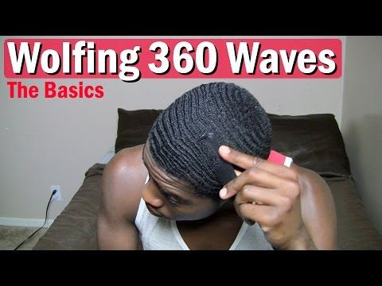

Lost Your Wave Progress? The Recovery Plan That Brings It Back
It happens to almost every waver: a barber takes it too low, a busy month eats the routine, an illness or a trip breaks the streak — and the mirror says the waves are gone. Here is the good news the panic hides: trained hair remembers. The pattern at the root survives far more than the surface shows, and a structured recovery brings most of it back faster than the original build took. 360WaveProcess (@360WaveProcess) teaches the growth-phase basics in the video below — the rebuild runs on exactly that discipline. This is the recovery plan.
Step 1: Assess what is actually left
Before rebuilding, measure the damage honestly. Wet the hair, brush it in pattern directions for five minutes, and look: in most 'lost' cases, the ghost of the pattern appears immediately — faint, shallow, but present and correctly directed. That ghost is your foundation, and it means weeks of recovery, not months.
If nothing shows — the hair was cut to the scalp or grew out untrained for months — you are rebuilding from near zero, and the beginner roadmap is your plan. Either way, take a day-one photo. Recovery feels slow from inside it; the photos will tell the truth your mood will not.
Step 2: The rebuild routine
The rebuild is the beginner system with the volume turned up: two brush sessions daily with mirror-verified angles, moisturising with a light hand, and compression every single night without exception — plus the cap-over-durag layer for the first two weeks, while the pattern is at its most fragile and persuadable.
Wash weekly by the full wash-and-style method, drying under compression every time. If the loss came from a bad cut, grow into a wolf rather than cutting again soon: length is what lets the remembered pattern express itself, and the wolfing basics in the video cover how to manage the growth phase without losing the plot.
Step 3: The realistic timeline
A ghosted pattern typically re-declares in two to four weeks of disciplined rebuilding — faster than the original build, because the root training persisted. A full rebuild from zero takes the standard beginner timeline: first ripples in weeks, connection in a couple of months.
Protect the comeback psychologically: the wavers who recover are the ones who treat the setback as a chapter, not an ending — and who fix the original cause. New barber instructions in writing, a routine that survives busy weeks at minimum dose (five-minute session, tie every night), and the streak restarts. Progress is rarely lost. It is misplaced — and now you have the map back.
Watch: wolfing basics from 360WaveProcess — the rebuild runs on a disciplined growth phase
Video: “How to get 360 Waves: Wolfing Method - Basics For Beginners” by 360WaveProcess (@360WaveProcess) · Watch on YouTube
Shop the gear
Everything in this guide runs on the right gear: a durag that holds compression without slipping, a cap that stays put, and fabric that treats your hair right. The durag.store launch lineup is built to that standard — dual-layer construction, long tails, and stitching made to survive the routine. Join the launch list and use code GOLDSTANDARD for 15% off your first order.
Keep learning
- Fixing Forks in Your Waves: Why They Form and How to Brush Them Out — Intermediate · Troubleshooting
- Uneven Waves and Weak Sides: The Rebalancing Program — Intermediate · Troubleshooting
- Forehead Lines From Your Durag: Causes and Complete Fixes — Basic · Troubleshooting
Sources: Video — “How to get 360 Waves: Wolfing Method - Basics For Beginners” by 360WaveProcess (@360WaveProcess), youtube.com. Guide written by the durag.store Wave Lab.